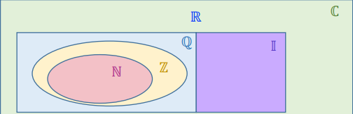
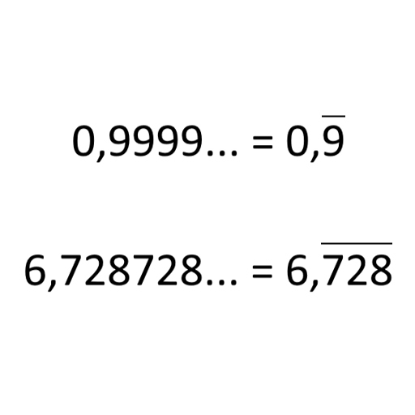
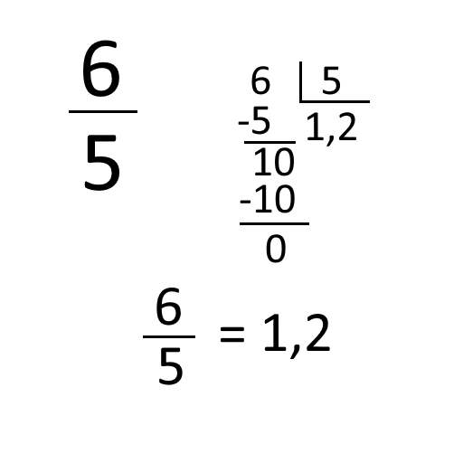
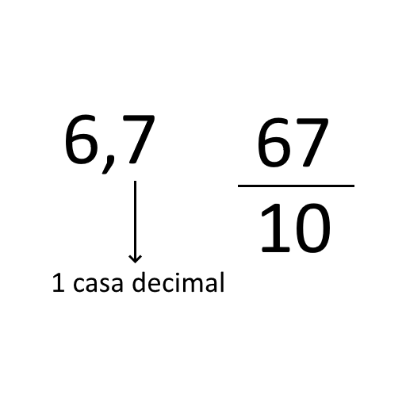
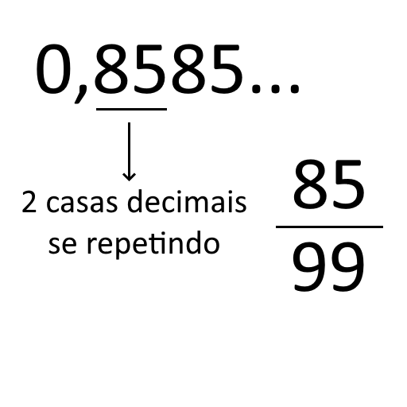
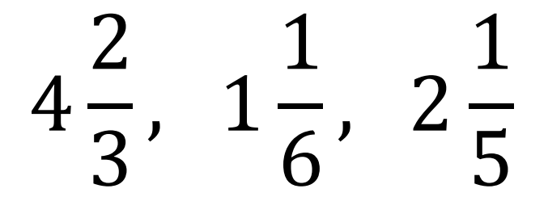
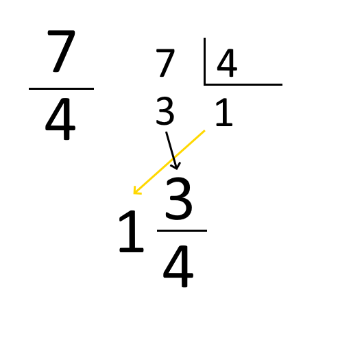
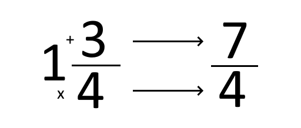

Aprendi este conteúdo também facilmente, pois já havia estudado nos anos anteriores sobre. Teve algumas coisas que eu não tinha estudado nos outros anos, mas que ainda sim consegui entender de forma fácil. Uma coisa que me confundiu um pouco foram os intervalos, por causa dos símbolos parecidos, mas com o tempo acredito que vou me acostumar.
Conjuntos Numéricos são uma coleção de números que apresentam algo em comum. Eles podem ser organizados de diversas formas dependendo do que em comum eles têm.
Neste conteúdo foram estudados os seguintes sistemas:
Como dito antes, os conjuntos numéricos são uma coleção de números que tem algo em comum.
Os números naturais é representado por ℕ = {0,1,2,3,4,5,6,7...}.
O primeiro número é zero, o segundo número é o sucessor de zero (1), o terceiro sucessor de 1 (2) e assim por diante.
Um subconjunto de ℕ é ℕ*, que inclui todos os números naturais excluindo o zero.
Os números inteiros é representado por ℤ = {..., -3,-2,-1,0,1,2,3...}.
O conjunto dos naturais é subconjunto dos inteiros, ou seja, todo número natural faz parte dos inteiros.
Há também o conjuntos dos inteiros não negativos que é representado por ℤ+, que inclui todos os inteiros positivos e o zero. Temos também os inteiros não positivos, representado por ℤ−, que inclui os inteiros negativos e o zero. É possivel excluir o zero desses conjuntos, por exemplo, ℤ+∗, que inclui somente os números inteiros positivos.
O oposto ou simétrico de +10 é -10. Isso quer dizer que ambos estão à mesma distância do zero. E a soma dos dois resulta em 0. +10 + (-10) = +10 - 10 = 0.
O conjunto dos racionais é o conjunto ℤ junto com todas as frações, negativas ou positivas.
Simbolicamente, ele é escrito assim:
ℚ = {𝑥 | 𝑥 = 𝑎/𝑏, 𝑐𝑜𝑚 𝑎 ∈ ℤ, 𝑏 ∈ ℤ 𝑒 𝑏 ≠ 0}
O conjunto dos naturais e o conjunto dos inteiros são subconjuntos dos racionais.
Outra forma de representar frações é com os números decimais, eles podem ter casas decimais finitas ou infinitas. Caso sejam infinitas, é preciso ver se elas seguem um padrão, se sim, elas são chamadas de dízimas periódias e pertencem ao conjunto dos números racionais.
Para transformar uma fração em números decimais, basta dividir o numerador pelo denominador. Poderá ter casas decimais infinitas ou não.
Para fazer isso, basta dividir o número, sem a vírgula, por 1 acompanhado por X zeros, sendo X a quantia de casas decimais do número.
Caso seja uma dízima periódica simples, na qual a parte decimal é somente a dízima, basta dividir a dízima por X noves, sendo X a quantia de casas decimais do dízima.
Caso seja uma dízima periódica composta é possivel transforma-lá em uma dízima periódica simples e fazer o processo anterior.
Números mistos são uma forma de representar frações impróprias, frações com o numerador maior que o denominador.
Para transformar uma fração imprópria em número misto, basta fazer a divisão da fração. Colocar o resultado somando com o resto sobre o divisor.
Para transformar um número misto em uma fração imprópria, multiplique o denominador do número misto pelo número que está somando, adicione o numerador e o resultado disso colocar sobre o denominador do número misto.
Os números irracionais, representados por I, são números que não tem representação decimal exata e nem são dízimas, alguns exemplos são: √2 = 1.41421..., π (Pi) = 3,141592..., φ (Número de ouro) = 1,61803..., √5 = 2.23606...
O conjunto de números irracionais não contém o conjunto dos racionais, eles estão separados. Então se um número é irracional, ele não pode ser racional, natural nem inteiro.
Os números reais, representados por ℝ, são a junção do conjunto dos racionais com os irracionais. Este conjunto contém os números naturais, inteiros, racionais e irracionais.
É possível estabelecer relações entre números reais, pelos seguintes símbolos:
a < b: a menor do que b
a > b: a maior do que b
a ≤ b: a menor ou igual a b
a ≥ b: a maior ou igual a b
Os números complexos, representados por ℂ, são os números que não tem solução, por exemplo, raízes negativas. Um exemplo é √−𝟏. Não existe um número que quando multiplicado por si mesmo é igual a -1.
Além disso, os números complexos constituem todos os conjuntos númericos: O conjunto dos naturais, dos inteiros, dos racionais, dos irracionais e dos reais.
São formas de representar os números reais em um intervalo.
Representação: (a, b). Inclui todos os números reais entre a e b, mas não inclui nem a nem b.
Na representação da reta, é utilizado ◦. E na representação escrita < e >.
Representação: [a, b]. Inclui todos os números reais entre a e b, e incluem a b.
Na representação da reta, é utilizado •. E na representação escrita ≤ e ≥.
Representação: (a, b] ou [a, b). Inclui todos os números reais entre a e b, e incluem apenas a ou b.
Na representação da reta e escrita são utilizados os símbolos de intervalos fechados e abertos.